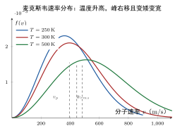

麦克斯韦速率分布定律
一句话定义
麦克斯韦速率分布定律给出平衡态理想气体中分子速率接近某一值的概率密度 ，描述分子速率如何按统计规律散布，。
定性
先把这个分布”看见”。
上一节我们说”分子平均速率约 500 m/s”，但那只是一个平均数。真实情况是：罐子里 个分子，有的慢吞吞像散步，有的快得像出膛的子弹，快慢五花八门。麦克斯韦速率分布，就是问一句：任意抓一个分子，它的速率落在某个小范围 里的可能性有多大？ 它给出一条曲线，描述速率如何”摊开”成一个概率谱。
这条曲线长什么样？它像一个不对称的钟：低速端（ 很小）概率趋近于零，随速率增大曲线迅速爬升、到某个速率 到达峰值（最概然速率，即最大可能出现的速率），之后又缓缓下降，高速端渐渐滑向零。为什么低速概率低？因为速率小意味着速度矢量的”取值范围”窄（球壳小）；为什么高速概率低？因为高速所需的动能大、被玻耳兹曼因子 抑制。一个是几何的（）在拉，一个是统计的（）在压，两者竞争出来的峰，正是麦克斯韦分布的相貌。
它在体系里的位置：麦克斯韦分布是统计规律的直接落地——它从”等几率假定 + 玻耳兹曼统计”一步步推出，是气体动理论里最著名、也最定量的一条分布。温度、压强、碰撞频率、内能这些宏观量，背后都靠它给出微观统计答案。
反直觉的点：温度升高，曲线峰值会”右移”但”变矮”，整体变宽。直觉上”更热 = 分子更快”好像只是峰右移，但其实为了保持总概率为 1（曲线下面积守恒），峰值必须同时下降。这提醒我们：温度升高，不只是”平均更快”，而是速率分布整个被拉宽——更多分子跑到高速区，这也正是高温气体更容易逃逸、反应更剧烈的微观起源。

图：平衡态理想气体分子速率分布 ，随温度升高峰值右移、曲线变宽变矮，且单条曲线上标注最概然速率 、平均速率 与方均根速率 。
数学表达
麦克斯韦速率分布（概率密度函数）为
表示分子速率落在 与 之间的概率。 是分子质量， 是玻耳兹曼常数， 是热力学温度。它满足归一化 。
由它可推出三种常用”统计速率”：
- 最概然速率（ 峰值）；
- 算术平均速率；
- 方均根速率（与平均动能 对应，故含 ）。
读这个公式的结构，它由两个因子相乘：（来自速度空间球壳的”表面积” ，即”几何态密度”）和 （来自玻耳兹曼统计，即”能量权重”）。峰的位置由 增与 降的平衡决定，解得 。三速率恒有 。
关键性质
-
归一化：。 分子的速率介于 与 之间的总概率是必然事件。为什么：所有分子的速率必然落在某处，概率密度积分必须为 1，这也决定了温度升高时曲线”变矮”以保面积守恒。
-
峰值由 （几何）与 （统计）竞争决定。 低速端 小、概率低；高速端 指数压低、概率低；中间平衡处出峰。为什么：分子速率越小，对应速度空间的”A 壳”体积越小，能落进的”态”越少；速率越大，需要的动能越高、被玻耳兹曼概率惩罚。两者一推一拉形成峰。
-
。 三种速率的量级关系固定。为什么：峰值由 与 的逐点竞争决定（最频），平均速率对全体加权求平均（对高速略作倾斜）， 由平方平均再开方（对高速端加权更重），故越”看重高速”的量越大。
-
温度升高：峰值右移、曲线变宽。 。为什么：温度升则分子平均动能升，最概然速率右移；归一化要求曲线下面积不变，故峰值下降、分布拉宽。
-
分子越轻，分布越宽。 。为什么：同样温度下，质量小的分子以更高速率达到相同平均动能，因此轻气体（氦、氢）的速率分布更宽、整体更偏高速端。
推导
现在把麦克斯韦分布真正推出来——不是背 ，而是看清它由”三个独立高斯 + 一个球壳因子”拼成。
先抛问题：分子速率为何是 这种形状？ 和 分别从哪来、为什么相乘？
设物理场景。取平衡态理想气体，分子速率无规。把分子速度 看成三个分量 ，在”速度空间”里可看作一个三维空间中的点，分子占据的点散布在该空间。
列依据。四条：一是等几率假定（分子无方向偏好），故三个方向统计独立、分布相同；二是玻耳兹曼统计，一个分子处在动能 状态的概率 ；三是速度分量动能 ；四是三个分量独立、各自呈高斯分布。
逐步演绎。第一步，看单个分量。对 ，其分布概率 ，是一个高斯分布（同理 、）。因三方向独立，联合分布是三个高斯的乘积：
第二步，换算到”速率”。速率 ，它只与速度矢量的长短有关。要让 表示”速率为 附近”的概率，就得先把所有”速率同为 “的速度矢量（它们构成速度空间的一个球壳）概率加起来。球壳半径 、厚度 ，体积 。
第三步，乘上球壳体积。因为有 个速度方向都对应同一个速率 ，所以
第四步，归一化。令常数 使 。利用高斯积分 ，得
即 。
回头看。结论水到渠成：麦克斯韦分布的”骨骼”非常清晰——三个独立高斯的方向分布（给出各向同性）乘上球壳面积 （给出几何态密度），再乘玻耳兹曼因子 （给出能量权重）。 是全部分量独立在球壳上的”三维”计数， 是能量越高速率越不可能。这两个因子相乘的竞争，就是麦克斯韦分布的整个物理。没有一处假设多余，全都源于”等几率 + 玻耳兹曼 + 三维球壳”。
为什么重要
麦克斯韦分布是气体动理论里最定量、最普适的一条概率规律，其地位与后果：
- 给出分子速率的完整统计：不再只说”平均 500 m/s”，而是知道任意速率区间的分子占比，从而精确算碰撞频率、逃逸比例、反应速率——它把”直觉的分布”变成”精确的概率”。
- 催生一切平均量：平均速率、方均根速率、最概然速率全由它算出，进而与压强、温度、内能公式一致——它证明温度公式、压强公式并不是孤立的，而是同一分布的平均结果。
- 连接宏观与微观的桥梁：从它可求 得到平均动能 ，与温度公式完全吻合——两条看似不同的规律，原来同心同源。
工程动机：化学反应速率与分子碰壁的多寡、真空抽气速率、火箭尾气分子速度分布、半导体工艺中气体流动，都离不开速率分布的定量统计。没有麦克斯韦分布，很多”分子平均行为”就只能靠猜。
它还有一层更深的分量：麦克斯韦分布被称作理想气体平衡态的一张”底牌”——凡是”大量无规、无相互作用、无外场”的粒子集合，速度分布都收敛到它。这使它在统计物理、等离子体物理、气体激光里反复”露脸”：计算逃逸比例、估计热发射电流、判断粒子束温度，都先默认速度服从（或偏离）麦克斯韦分布。它像统计世界里的一把”标准尺”，一切无相互作用粒子系统的速度统计，都拿它当参照。
适用条件
麦克斯韦分布的前提正是”平衡态 + 理想气体 + 经典”：
- 平衡态、无外场：分子各方向无偏好、分布稳定。有外场（重力场等）时分布会叠加势能修正，成为玻耳兹曼分布而非纯速率分布。
- 理想气体、大量分子：分子间无相互作用、分子数海量，统计平均才严格。稠密气体因分子尺寸与相互作用，分布偏离。
- 经典接近（温度不太低）：经典能量连续近似；极低温量子效应（玻色/费米统计）会使分布改变。
边界要说清：非平衡态、外场下的分子流、强相互作用、量子简并（如低温玻色气体）都不适用纯麦克斯韦分布。真实边界：大气层上层（逃逸逸流）、极低温量子气体、激光冷却的超冷原子云，均超出其适用范围，须用更准确的分布。
边界与误区
-
误区一：把 当成”某个分子的速率”。 根因：把概率密度当个体值。正确区别： 是概率密度， 才是”速率落在 的概率”。它描述的是海量分子的统计占比，不是单个分子的确定速率。单个分子速率仍完全随机、不可预言。
-
误区二：以为最概然速率 就是平均速率。 根因：峰值”最该出现”，直觉以为就是平均。正确区别：（最频）（平均）（方均根）。因为分布不对称、右边长尾，平均值被高速端拉大，故 。
-
误区三：以为温度升高时峰值也升高。 根因：“更热更快”直觉。正确区别：温度升高 右移，但因归一化（面积守恒），峰值高度下降、曲线变宽。认为”峰值更高”是错的——分布只是被拉宽，不是被抬高。
-
误区四：把 项当成”速度越大概率越高”。 根因：只看 递增。正确区别： 里 增、但 指数死压，高速端整体概率趋零。 只让分布从 爬升到峰，峰之后全由 主宰、一路下滑。只看前一半会误判分布形状。
对照
最容易和麦克斯韦分布混的是玻耳兹曼分布律。两者只用一个关键差异区分：
麦克斯韦只分布”动能”（无外场），玻耳兹曼分布”动能+势能”（含外场）。
麦克斯韦分布给纯动能 的速率分布，无外场、只需速率；玻耳兹曼分布给出含势能场合的能量分布 ，其中 含动能和势能（如重力势能），故能描述大气压随高度、粒子数随高度的变化。一句话记忆：麦克斯韦看”速度”，玻耳兹曼看”能量（含位置）“——麦克斯韦是玻耳兹曼在”无外场、只看动能”时的特例。
例子
我们用麦克斯韦分布算室温氧分子的三种速率，看它们差多少。
取氧分子（），摩尔质量 ，分子质量 。室温 ，：
三者关系分明：，方均根比最概然快约 22%。
反推工程含义：室温氧分子平均以约每秒 480 米乱飞（比音速 340 m/s 还快）。而”方均根”之所以更大，正因它给高速端更重的权重——这提醒我们：算分子碰撞动能、算气体碰壁压力时，要用 （对应 ），而算”大多分子多快”时用 。选哪个速率要看物理量本身对速度的依赖——平均动能依赖平方、平均速率依赖一次方，故分别取 与 ，这正是麦克斯韦分布把”精确概率”落实到工程选择的实例。